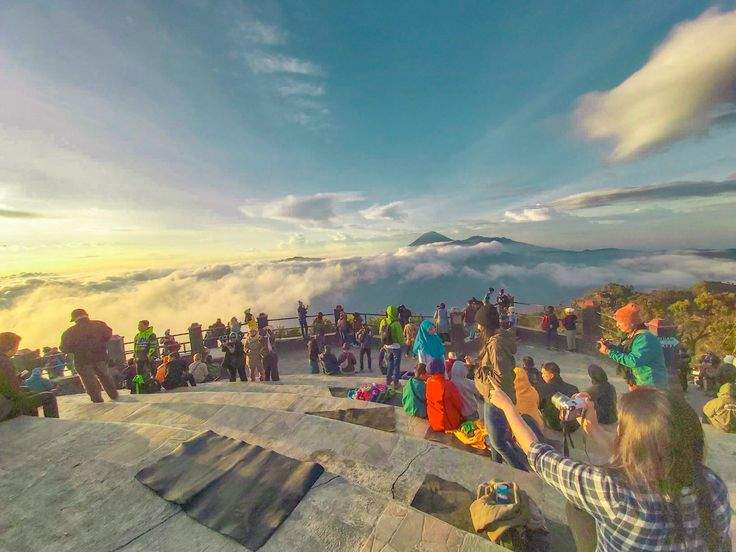

Gunung Bromo adalah salah satu gunung berapi yang paling terkenal di Indonesia. Terletak di Taman Nasional Bromo Tengger Semeru, gunung ini menawarkan pemandangan yang menakjubkan, terutama saat matahari terbit. Keindahan alamnya yang memukau membuatnya menjadi destinasi favorit bagi para wisatawan lokal maupun mancanegara. Dengan ketinggian sekitar 2.392 meter di atas permukaan laut, Gunung Bromo memiliki daya tarik tersendiri yang tidak bisa ditemukan di tempat lain.
Setiap tahun, ribuan wisatawan datang untuk menikmati keindahan alamnya dan berpartisipasi dalam upacara Yadnya Kasada yang diadakan oleh masyarakat Tengger. Upacara ini merupakan tradisi yang telah berlangsung selama berabad-abad dan menjadi salah satu daya tarik budaya yang menarik perhatian banyak orang. Selain itu, suasana di sekitar Bromo yang dikelilingi oleh lautan pasir menambah daya tarik tersendiri bagi para pengunjung.
Gunung Bromo juga dikenal dengan keindahan matahari terbitnya yang spektakuler. Banyak pengunjung yang rela bangun pagi-pagi sekali untuk menyaksikan momen magis ini. Pemandangan dari puncak Penanjakan sangat memukau , dengan langit yang berwarna-warni dan siluet Gunung Bromo yang menakjubkan. Selain itu, pengunjung juga dapat menikmati berbagai aktivitas menarik seperti trekking, berfoto, dan menjelajahi keindahan alam yang ada di sekitarnya. Gunung Bromo bukan hanya sekadar tempat wisata, tetapi juga merupakan pengalaman yang tak terlupakan bagi setiap orang yang mengunjunginya.
Destinasi Wisata di Gunung Bromo
Kawah Bromo
Kawah Bromo adalah salah satu daya tarik utama yang tidak boleh dilewatkan. Di sini, pengunjung dapat melihat kawah aktif dan menikmati pemandangan yang menakjubkan. Suara gemuruh dari kawah menambah pengalaman yang mendebarkan bagi setiap pengunjung. Selain itu, pengunjung juga dapat melihat asap yang keluar dari kawah, memberikan nuansa yang lebih dramatis.
Sunrise di Penanjakan

Tempat terbaik untuk menyaksikan matahari terbit adalah di Penanjakan. Pemandangan dari sini sangat memukau, dengan langit yang berwarna-warni dan siluet Gunung Bromo yang menakjubkan. Banyak wisatawan yang datang lebih awal untuk mendapatkan tempat terbaik dan menikmati keindahan alam yang luar biasa ini.
Pasir Berbisik
Lautan pasir yang luas, terkenal dengan keindahan alamnya dan suasana yang tenang. Tempat ini sangat cocok untuk berfoto dan menikmati ketenangan alam. Pasir Berbisik juga menjadi lokasi yang populer untuk melakukan aktivitas off-road menggunakan jeep, memberikan pengalaman yang seru dan berbeda.
Bukit Teletubbies
Bukit hijau yang indah ini menawarkan pemandangan kontras dengan lautan pasir di sekitarnya. Bukit ini menjadi spot favorit bagi para fotografer, terutama saat matahari terbenam. Keindahan alam yang ada di Bukit Teletubbies membuatnya menjadi tempat yang wajib dikunjungi.
Padang Savana
Area luas yang hijau ini sangat ideal untuk trekking dan menikmati keindahan alam. Suasana di sini sangat damai dan menenangkan, menjadikannya tempat yang sempurna untuk bersantai dan menikmati keindahan alam yang masih asri.
Harga Tiket Masuk
Harga tiket masuk ke Gunung Bromo adalah sebagai berikut:
Wisatawan Lokal:
Hari Biasa: Rp 29.000
Hari Libur/Akhir Pekan: Rp 39.000
Wisatawan Mancanegara:
Hari Biasa: Rp 217.500
Hari Libur/Akhir Pekan: Rp 317.500
Harga tiket ini dapat berubah sewaktu-waktu, jadi pastikan untuk memeriksa informasi terbaru sebelum berkunjung.
Tips Perjalanan ke Gunung Bromo
Waktu terbaik untuk berkunjung adalah saat musim kemarau (April hingga Oktober) untuk menghindari hujan yang dapat mengganggu perjalanan.
Persiapkan fisik dan bawa pakaian hangat karena suhu bisa sangat dingin, terutama saat pagi hari.
Rencanakan transportasi dan akomodasi jauh-jauh hari, terutama saat musim liburan, untuk memastikan kenyamanan dan kemudahan selama perjalanan.
Jaga kebersihan dengan membawa kembali sampah Anda, dan hormati lingkungan serta budaya setempat.
Selalu periksa cuaca sebelum berangkat, agar Anda dapat mempersiapkan diri dengan baik.
Video tentang Gunung Bromo
Video ini memberikan gambaran yang lebih jelas tentang keindahan Gunung Bromo dan aktivitas yang dapat dilakukan di sana. Jangan lewatkan untuk menontonnya agar Anda semakin terinspirasi untuk mengunjungi tempat yang menakjubkan ini.